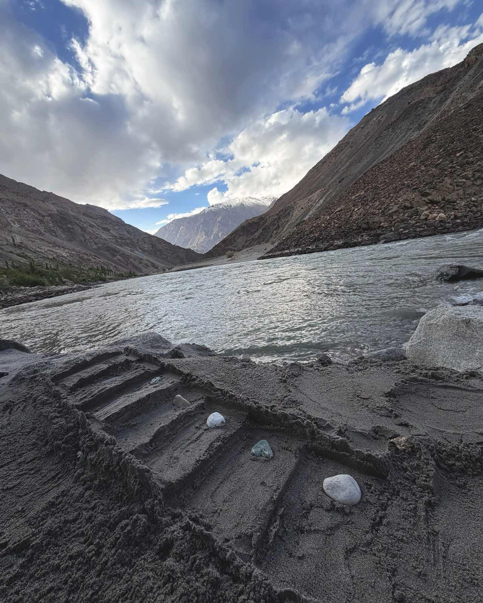
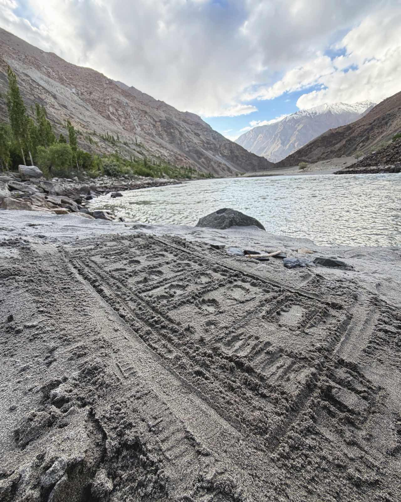
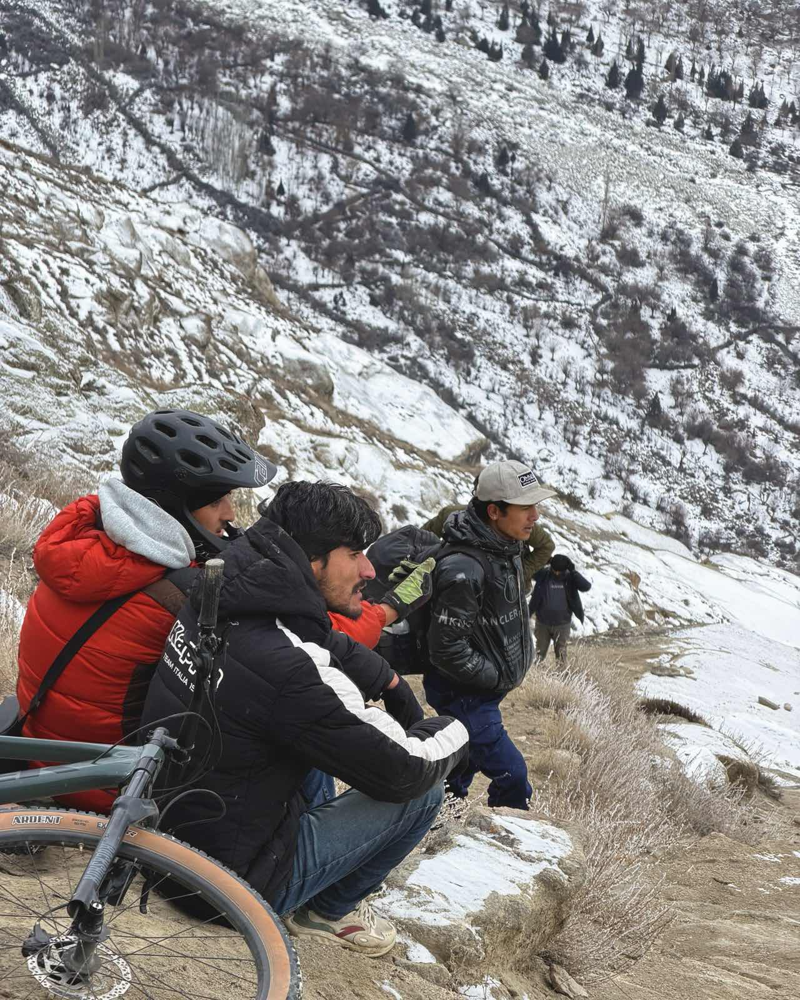
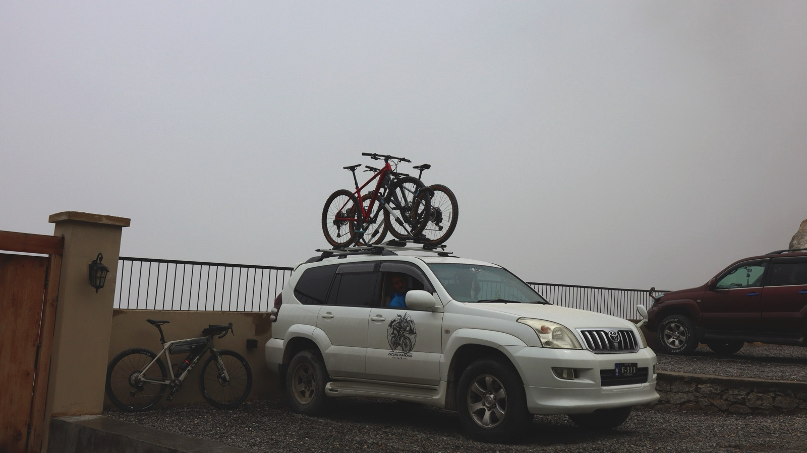
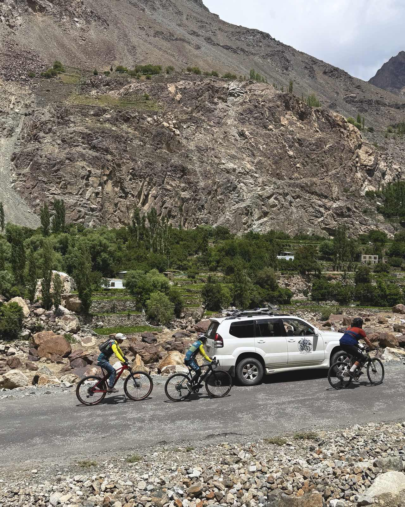

The mountain cafe, the brangsas, the villa — coming late 2027.
On a piece of land looking out at the mountains, the next chapter is already drawn — literally. We walked the plot and traced it into the sand: here the mountain cafe, there the brangsas, beyond them the villa. A place to ride from, and a place to return to.
A brangsa, if the word is new to you, is a traditional Balti room — low, warm, made for long evenings. Ours will sit beside the cafe, so the day can end where the ride does.


We've sat on this plot in the sub-zero months, around a fire, watching the peaks disappear into the dark. We know which corner catches the morning sun and where the wind comes from. That is the kind of knowing a building deserves.
The logo is already out working — on the Prado, up and down the valleys, loaded with bikes. Consider it the cafe's advance party.

